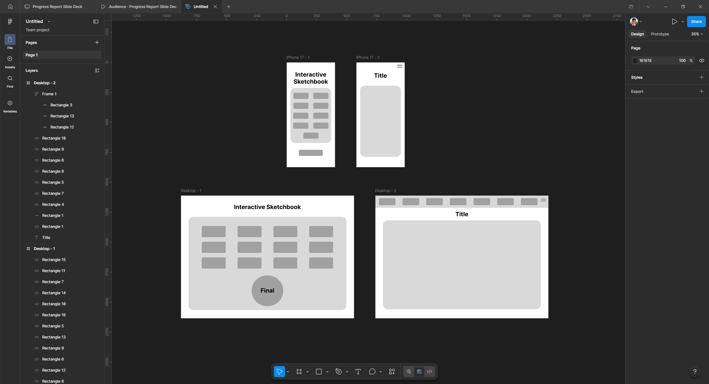

I’ve decided on a much more clean style for this first revision. I tried to make everything a lot more aesthetically pleasing and make good use of screen real estate compared to the original version that only took up a small portion of the screen.
I did my audit on my microsketch page instead of the main interactive sketchbook page like I’m doing now. However, I believe this fixed the problem of that rule 8 of the heuristics addresses, aesthetics and minimalistic design. Even though the original is very minimalist on its own, I believe it’s a tiny bit too minimalist. It’s insanely simple with absolutely nothing eye-catching to catch the viewer’s attention whatsoever.
Another issue with the original design was the absence of any clear aesthetic identity. It consisted almost entirely of black text on a white background, which made it feel more like a placeholder than a deliberate design choice. In contrast, this revised version begins to introduce a more structured and functional layout. Even though I have not incorporated color yet, the page now resembles something closer to a real website, with clearer sections and a more intentional arrangement of content. That said, this is still an early draft of the landing page, and there is plenty of room for improvement. One of the most immediate next steps is to establish a cohesive color scheme that enhances both usability and visual appeal. Additionally, I want to further refine the layout to ensure that each element serves a clear purpose and contributes to the overall user experience. As I continue iterating, I will focus on balancing visual interest with clarity, making sure the design remains both engaging and easy to navigate.